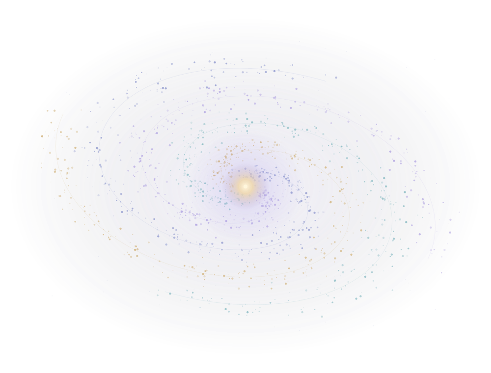

Knowledge with context
Markdown notes remain the foundation. Maps, source references, and recorded relationships help connect ideas across projects.
See the foundation ↗Knowledge · Agents · Evidence
Macrothought brings notes, projects, and agent sessions into a connected workspace. See the relationships. Follow the work. Keep the evidence.

KNOWLEDGEPROJECTSAGENT ACTIVITYCONTEXTConsulate is the workspace at the heart of Macrothought.
Working local software · evolving through reviewed previews
01 / Make the connections useful
The useful part of a second brain is being able to pick up where you left off: the note, the conversation, the change, and the reason behind it.
Markdown notes remain the foundation. Maps, source references, and recorded relationships help connect ideas across projects.
See the foundation ↗Managed remote sessions bring ongoing agent work into view, with session history, project context, and explicit operator controls.
Explore the workflows ↗Requirements, changes, checks, and review records help explain what happened. A completion claim still needs supporting evidence.
Read the current limits ↗02 / The galaxy workspace
The direction is a 3D galaxy: spiral arms for departments, focused project views, and a file hierarchy when you need it. Shared identity connects the views; each layout serves a different task.
◈ FIELD ATLAS Research department
SYNTHETIC INTERACTION STUDYSelect a document, then switch views. Its identity stays the same.
Explore a direction, using invented data. This small example illustrates shared context; it is not a live workspace. The Sol representation in the separate workspace preview is synthetic and has no connected chat bridge.
03 / Everyday work
Three practical uses for the existing local tools. The connected experience is still being refined.
Move from a research question to relevant notes and source references. Keep uncertainty visible when the evidence is incomplete.
Return to an agent session, inspect its project context and history, then choose the next action from the operator workspace.
Inspect changes and recorded checks before accepting a result. Keep an agent’s completion message separate from verification.
04 / Project status · 19 October 2026
Macrothought is an independent, operator-managed workspace project. The local tools are substantial; a reproducible public release and a consistent end-to-end experience still need work.
“Working locally” reflects inspected source and prior local evaluations, not a production certification. A connected Sol chat bridge, production-ready OS, live trading, and customer adoption are not established.
05 / How it fits together
Consulate combines a Python core, browser interfaces, Markdown knowledge, and separate stores for relationships and operational records.
A shared interface can reference those records without putting every kind of data into one database. Optional local and cloud model tools depend on explicit configuration.
Markdown notes hold durable knowledge. Entity records and source references describe the connections.
Sessions, requirements, artifacts, checks, and reviews retain different roles and records.
Maps, project views, history, and research surfaces make those records inspectable. Bounded controls support human review; governance remains under evaluation.